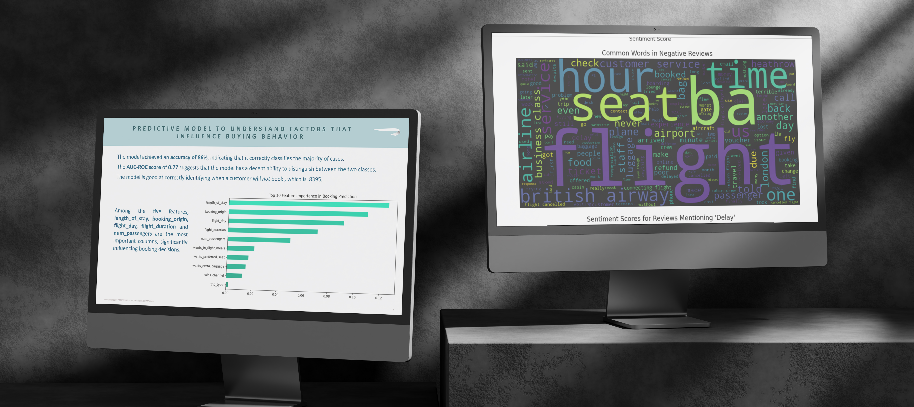

Back to Home

January 18, 2025
British Airways Data Science Job Sumation
Overview
This project consists of two main tasks that focus on understanding customer feedback and predicting customer behavior. The first task involves scraping and analyzing reviews from a popular airline review website, while the second task focuses on predicting customer booking behavior using machine learning. These tasks help in gaining insights into customer experiences and understanding the factors influencing their decisions. The overall goal is to improve the airline’s services and marketing strategies by leveraging data analytics and machine learning.
Project Objectives
Task 1: Analyze Customer Reviews
- Scrape and clean review data from Skytrax (British Airways) website.
- Analyze customer sentiments using techniques like topic modeling, sentiment analysis, and word clouds.
- Present insights in a PowerPoint presentation for effective board meeting communication.
Task 2: Predict Customer Booking Behavior
- Preprocess and prepare the dataset for predictive modeling.
- Train a RandomForestClassifier to predict customer booking behavior.
- Evaluate the model using cross-validation and interpret feature importance for better model understanding.
- Visualize how each feature contributes to the prediction outcome and summarize findings in a PowerPoint slide.
Task 01
The primary goal was not to build a predictive model but to perform exploratory data analysis (EDA) on customer reviews to uncover valuable insights. The process began by scraping customer reviews from the Skytrax website and cleaning the text data. Although no traditional machine learning model was used, techniques such as Sentiment Analysis and Topic Modeling were employed to analyze the textual data. Sentiment analysis categorized reviews into positive, neutral, or negative sentiments, allowing the team to gauge overall customer satisfaction. Topic modeling was performed using methods like Latent Dirichlet Allocation (LDA), which identified key themes such as service quality, seat comfort, and punctuality.
Task 02
The goal was to build a predictive model to forecast whether a customer would complete a booking based on various features. The dataset was first preprocessed, with categorical features like sales channel, trip type, and flight day being encoded using Label Encoding. The Random Forest Classifier was chosen as the model due to its ability to handle complex datasets and its feature importance capabilities. The model was trained on the prepared dataset, with booking_complete as the target variable. Evaluation metrics such as accuracy, confusion matrix, classification report, and AUC-ROC score were used to assess model performance.
Data Analysis and Key Insights
Data Collection and Cleaning:
- The data collection was performed by scraping customer reviews from the Skytrax website, specifically focusing on British Airways. Multiple pages were scraped to gather a comprehensive dataset containing review titles, body content, ratings, reviewer names, dates, and specific category ratings (e.g., seat comfort, cabin staff service, value for money).
- After collecting the data, extensive cleaning was necessary. This included handling missing values, removing irrelevant content (e.g., separating review text from metadata), and standardizing the column names for consistency. Additionally, review bodies were cleaned to remove unwanted characters, ensuring the text data was ready for analysis.
Sentiment Analysis:
- Sentiment analysis revealed that the overall customer sentiment toward British Airways had a mixed tone. Many reviews highlighted positive experiences related to the professionalism of the cabin crew and flight comfort, while negative feedback often mentioned issues with delays, customer service, and the overall value for money.
- Positive reviews primarily focused on customer satisfaction with specific staff interactions, while negative reviews frequently pointed out issues with the seating, inflight entertainment, and customer service responsiveness.
Topic Modeling:
- Service Quality: Reviews frequently mentioned the helpfulness and politeness of the cabin crew, indicating a high level of satisfaction with customer service in-flight.
- Seat Comfort: Many negative reviews highlighted discomfort in the seating arrangement, which emerged as a critical point for customer dissatisfaction.
- Punctuality and Delays: A significant portion of reviews expressed frustration over delays, with many passengers noting that they had experienced significant wait times at airports, impacting their overall flight experience.
Actionable Insights:
- British Airways should consider investing in upgrading economy class seating to address the discomfort reported by many passengers.
- Improving communication and responsiveness in case of delays could enhance the overall customer experience.
- The positive sentiment toward cabin staff indicates that training programs for staff are effective; however, continuing to maintain high levels of service is crucial for retaining customer loyalty.
Conclusion
Provided valuable insights into customer satisfaction with British Airways through sentiment analysis and feature extraction, identifying key areas for improvement. By utilizing visualizations and key metrics, these findings were effectively communicated for a board meeting. On the other hand, successfully built a predictive model using Random Forest to forecast customer booking behavior, showcasing the potential of machine learning to drive data-driven decisions. The model's evaluation metrics and feature importance visualizations further highlighted the key factors influencing booking decisions, offering actionable insights for business strategy.
GitHub Repository Link